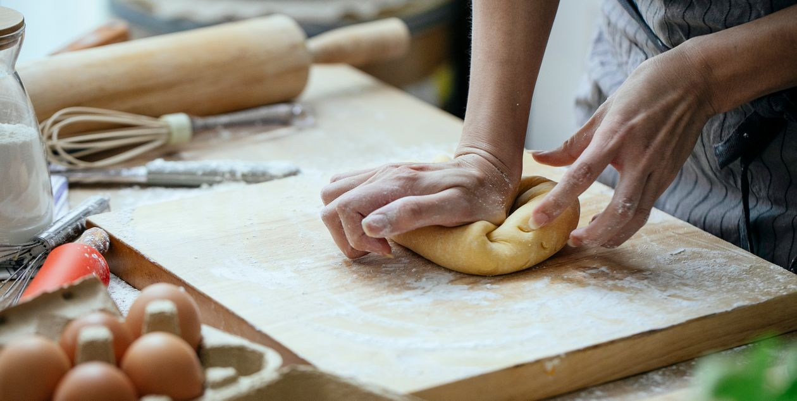

Our Story
Founded in 2020, Crumb & Crust began with a simple passion: bringing traditional European baking techniques to our local community using 100% organic, non-GMO regional grains.

Founded in 2020, Crumb & Crust began with a simple passion: bringing traditional European baking techniques to our local community using 100% organic, non-GMO regional grains.
